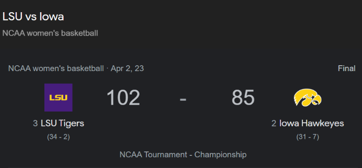

One Superstar or Five Stars?
By Giulia Roy, Grace Qian | November 14, 2023

The 2023 NCAA March Madness Women’s Basketball Tournament final was certainly not one to forget. The high profile matchup featured the Iowa Hawkeyes and the LSU Tigers. In an exciting match, the Tigers won their first NCAA women's basketball title and outscored the Hawkeyes 102-85.
On paper, Iowa was certainly a formidable team. Home to National Player of the Year Caitlin Clark, the Hawkeyes had an unstoppable talent. Averaging 32.2 points per game in the Hawkeyes' five wins, Caitlin Clark not only led Iowa, but the whole tournament in points per game. As LSU coach, Kim Mulkey put it, Caitlin Clark is a “generational player.” She is the only player in NCAA women's tournament history to score consecutive forty point games. It’s fair to say that at times, the Hawkeyes looked like a one-woman show with Clark on the floor. However as the numbers show, one-on-five basketball does not always win games.
The bar graph below shows the top five scorers for both the Hawkeyes and the Tigers for the 2022-2023 season. As the graph shows, both Iowa, and LSU have quite a gap between their top scorers, and the rest of the team’s scoring. However, the Tigers have a little less variation in their top scorers’ average points per game than the Hawkeyes do. Based on this, the teams look quite evenly matched in terms of scoring capabilities. In the final however, the Tigers’ scoring distribution looked much different than their season distribution did.

The graphs below show the number of points scored by the top five season scorers of both teams in the NCAA final. While Iowa’s distribution looks very similar to the season distribution, LSU’s distribution looks very different. The Tiger’s variation in points scored by different players drastically decreased in the final. All five of their top scorers scored double figures to lead the Tigers to the win.

Teams tend to have one to two players who are a cut above the rest. Coaches will try double teams, and send their best defenders to faceguard, but at the end of the day these superstars will still score the basketball. For Iowa, Caitlin Clark is this player. Indeed, Caitlin Clark had anything but an off night in the final. She scored 30 points, hit threes from downtown with brazen confidence, and dished out lovely assists. However, other players on Iowa did not step up. This shows the importance of having depth in a team. Czinano, Warnock, and Stuelke all performed below their season average. The opposite was true for LSU. While Angel Reese scored eight less points than her season average, Jasmine Carson scored thirteen more points than average. LSU played team basketball and saw contributions from players across the board. They came in knowing that Caitlin Clark was going to hit shots, but they contained the rest of her team, and reaped the benefits.


The pie chart above shows the percentage of points scored by each Iowa player for the 2022-2023 season. Caitlin Clark was the clear leader with 1,055 points total, followed by Monika Cnizano who scored 650 points and McKenna Warnock who scored 392 points. This uneven distribution of scoring that showed up especially in the final game, seems to have been a contributing factor to the Hawkeyes’ loss. Indeed, too much emphasis on one or two main players can be devastating to a team if those stars suffer an injury or are unwell, or are simply having a bad day. Interestingly, in the case of Caitlin Clark, none of these were the case. Iowa’s supporting cast simply did perform well enough in the championship game to match Caitlin Clark’s stellar play.
On the other hand, LSU was led by “Bayou Barbie” Angel Reese, who scored around one fourth of LSU’s points, followed by Alexis Morris with 18%, and, Flau’jae Johnson, LaDazhia Williams, and Jasmine Carson each with approximately 10%.
The contrast between Iowa's pie chart and LSU's more balanced scoring distribution exemplifies the power of having multiple contributors. In Iowa's case, the chart is dominated by Caitlin Clark, while in LSU's case, the distribution is more evenly divided. This difference reflects the essential principle that a team is as strong as its weakest link. In the championship game, the Tiger's well-rounded approach allowed them to have five strong scoring threats at all times, effectively overpowering Clark's brilliance and showcasing the vulnerabilities in the Hawkeyes' scoring strategy.
In the end, the 2023 March Madness Women's Basketball Tournament final provided us with an insightful display into the dynamics that define the game. The Iowa Hawkeyes, led by the extraordinary Caitlin Clark, showcased the immense power and influence of a superstar player. Her record-breaking performances and mind-boggling talent were unmatched. Yet, as the championship clash showed, basketball is not a one-person show. The LSU Tigers, with their balanced and team-oriented approach, proved that the strength of five stars, shining collectively, can outshine even the brightest individual star.
The graphs and statistics above reveal a crucial lesson: the importance of team depth and balanced scoring. While Caitlin Clark undoubtedly deserves her title as a "generational player," her spectacular performance alone couldn't secure the championship for the Hawkeyes. The Tigers wisely recognized that containing the supporting cast of a superstar is just as important as containing the star herself. Their remarkable execution in the final, with all five of their top scorers stepping up, highlights the significance of teamwork in the pursuit of success.
In the world of sports, where one moment can define a career and one game can shape a legacy, the 2023 NCAA Women's Basketball Tournament final reminded us of the intricate dance between individual brilliance and collective effort. Whether it's a team like the Hawkeyes, heavily reliant on their superstar, or the Tigers, who harnessed the combined strength of their core players, the success of teams with one sensational player vs. five stars ultimately depends on the harmony of the team and the ability to adapt during crunch time. As these different team dynamics continue to intrigue fans and analysts alike, balance remains the key to a championship ring.